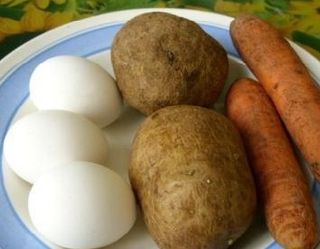
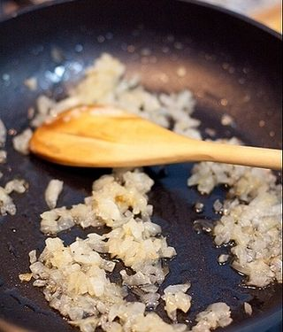
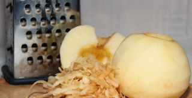
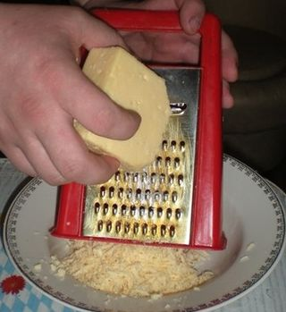
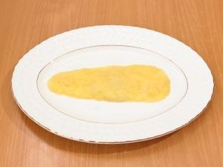
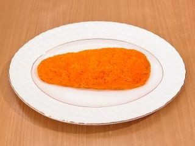

Шаг 1: Подготавливаем ингредиенты.

Отвариваем морковь, картофель и яйца в одной кастрюле для экономии воды и времени. Яйца нам нужны вкрутую, а морковь и картошка хорошо сваренные, но не разваливающиеся, поэтому следите за временем и степенью готовности. Когда ингредиенты будут готовы, очищаем их и трём морковь на мелкой тёрке, картофель и яйца тоже можно натереть или просто мелконарезать.

Лук нужно промыть и очистить, а затем в мелко нашинкованном состоянии отправить на сковородку, долить немного масла, обжарить до золотистого цвета. Перед добавлением в салат его необходимо охладить.

Яблоки моем, удаляем сердцевину и семечки, а затем натираем на мелкой тёрке. Если кожица очень кислая, то её можно срезать.

Сыр трём на тёрке, мелкой или крупной - значения особого не играет, потому выбирайте как Вам удобнее.
Шаг 2: Готовим салат "Морковка".

Теперь наша задача - выложить первый и последующие слои салата в виде аппетитной морковки. Для этого выкладываем ингредиенты горкой, смазывая каждый слой небольшим количеством майонеза. Ну и не забываем солить каждый слой. Берём плоский широкий салатник и выкладываем первый слой салата - картофель, затем лук, сыр, яйца, яблоки. Смазываем верх салата майонезом и переходим к оформлению салата.
Шаг 3: Украшаем салат "Морковка".

В оформлении салата нет ничего сложного, но смотрится он очень эффектно и позитивно. Равномерно обсыпаем салат тёртой варёной морковкой и делаем "ботву" из промытой веточки петрушки. Салат "Морковка" готов! Отправляем его настояться в холодильник на пару часов.